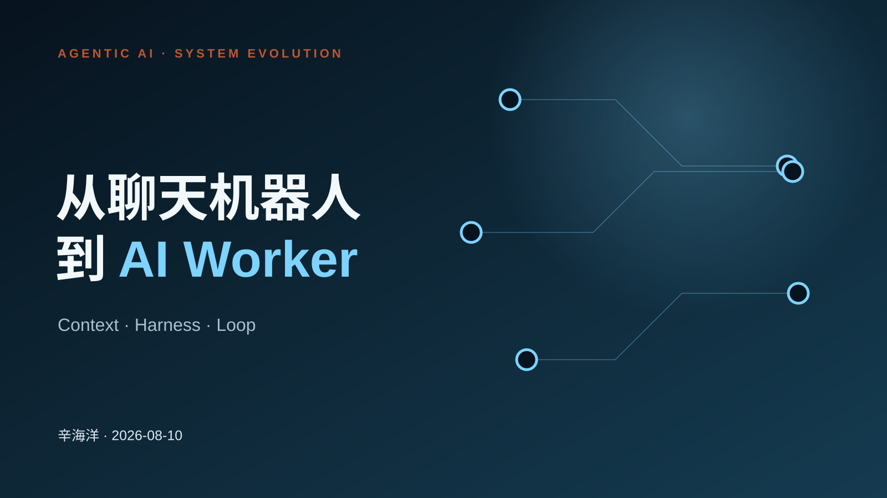
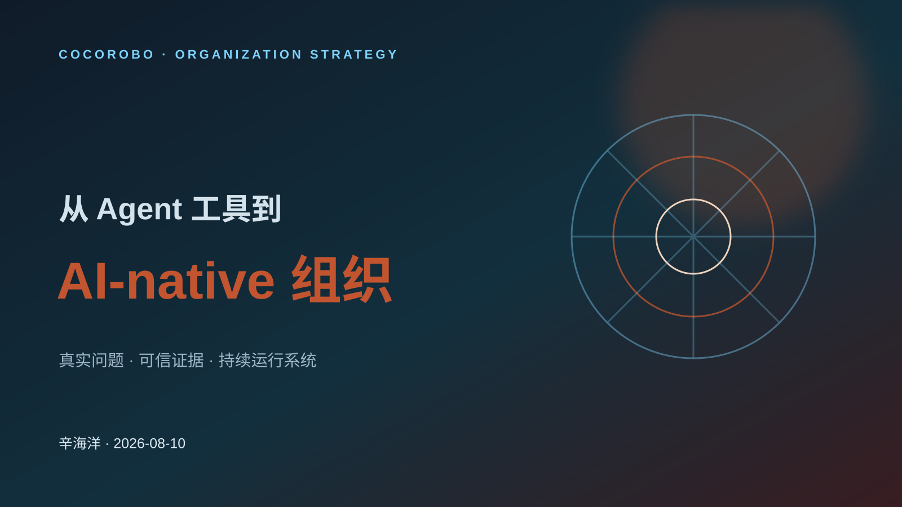
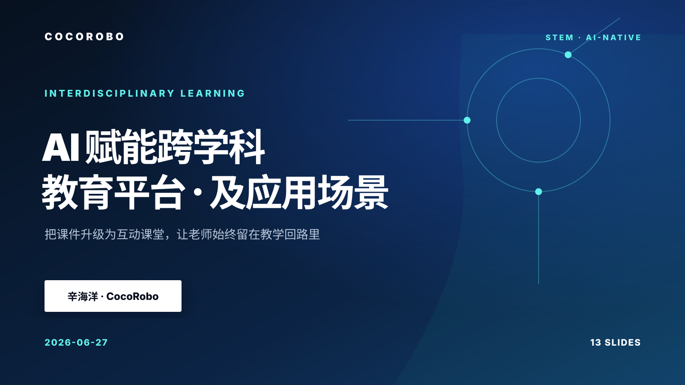
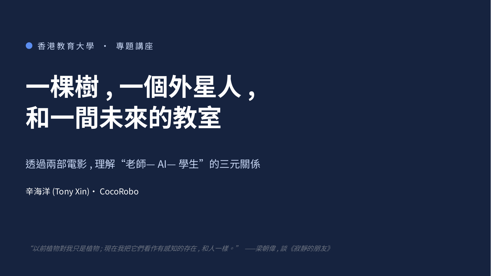

01 / 04 公开AGENTIC AI · SYSTEM EVOLUTION
从聊天机器人到 AI Worker
↗梳理 Agentic AI 从对话界面走向工作系统的演化，并说明 Context、Harness 与 Loop 如何重塑 AI-native 教育产品。
PRESENTATIONS
按主题汇集公开演讲，提供内容摘要、演讲时长、发布日期与独立访问链接。

01 / 04 公开AGENTIC AI · SYSTEM EVOLUTION
梳理 Agentic AI 从对话界面走向工作系统的演化，并说明 Context、Harness 与 Loop 如何重塑 AI-native 教育产品。

02 / 04 公开COCOROBO · ORGANIZATION STRATEGY
从生成能力商品化出发，提出以真实问题、可信证据和持续运行系统为核心的 CocoRobo 产品与组织转型路线。

03 / 04 公开AI-NATIVE · INTERDISCIPLINARY LEARNING
介绍如何把课件升级为互动课堂，并以智能体、H5、课堂互动和智能总结连接备课、课中与课后，让老师始终掌握教学主导权。

04 / 04 公开EDUHK · DOCTORAL FORUM
透过两部电影理解“老师—AI—学生”的三元关系，并进一步讨论关系、责任、摩擦与多智能体协作学习。
未找到符合当前条件的演讲。